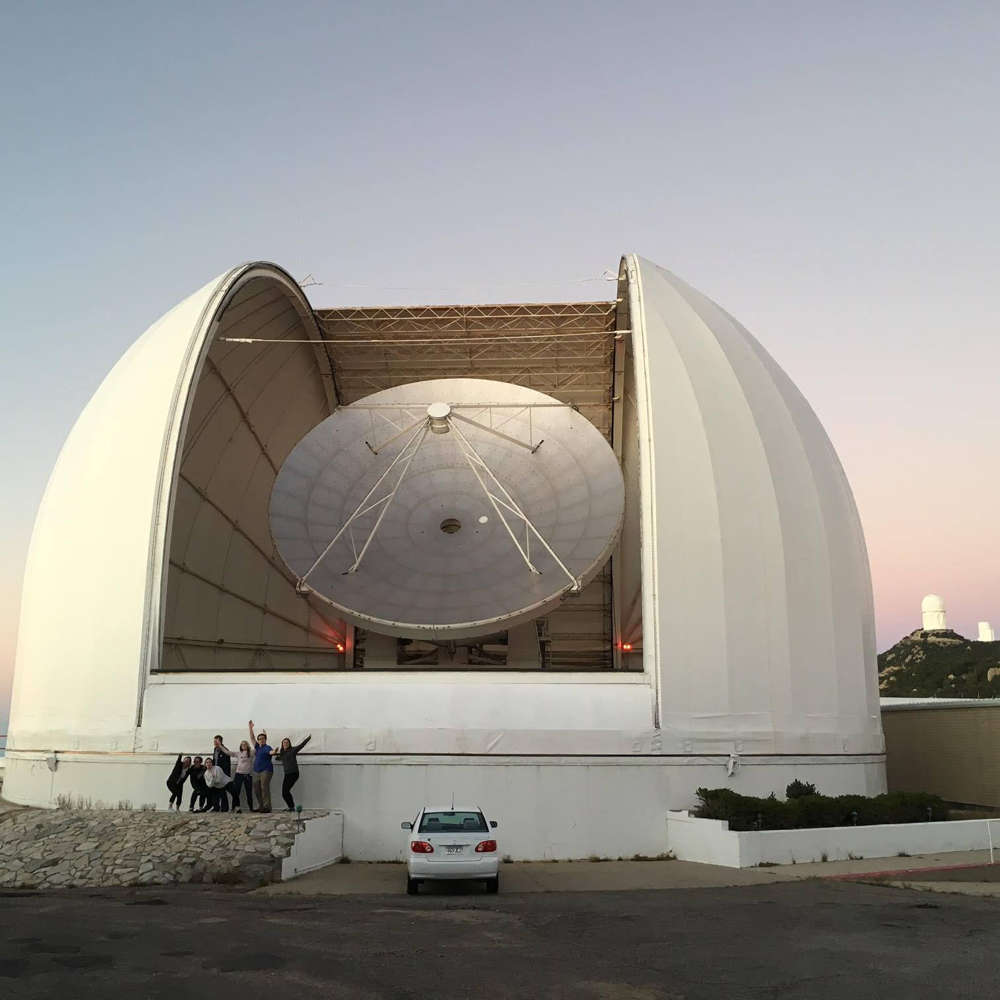
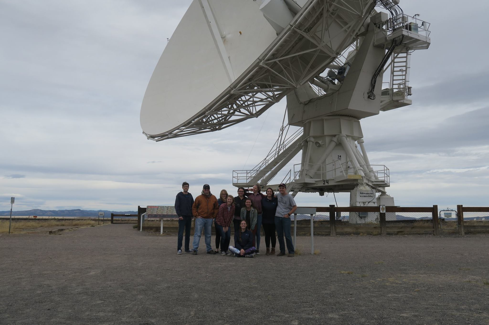
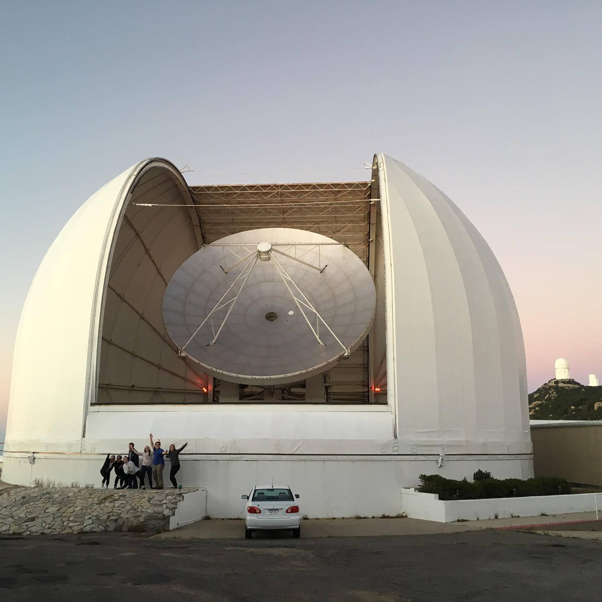
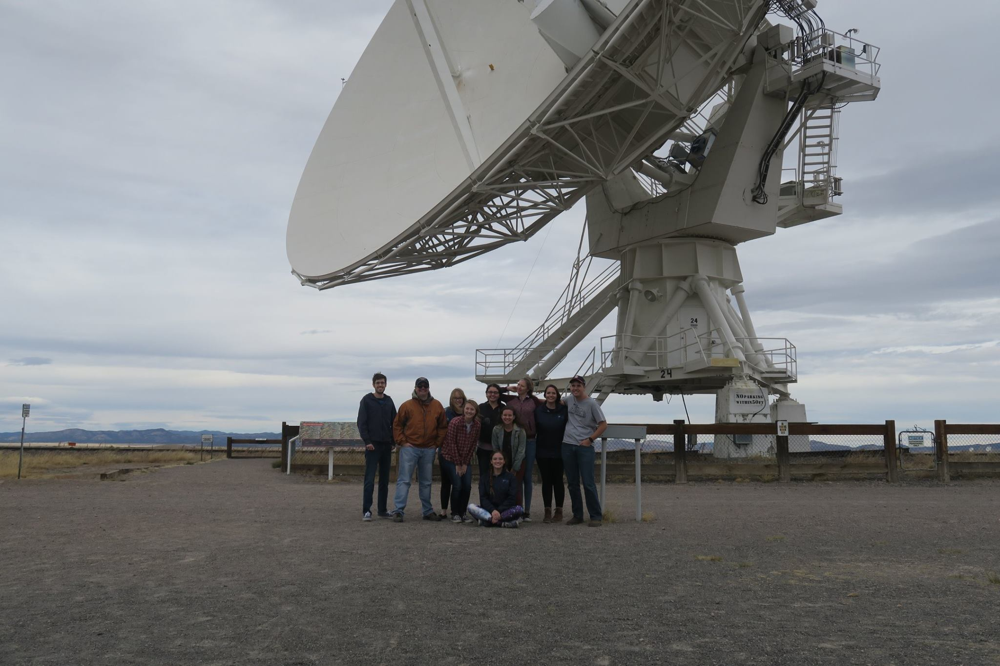

Research Projects
NASA
NASA LaRC: Machine Learning Showroom (2022-Present)
As part of NASA Langley Research Center, I currently work on the Information, Data, & Analytics Services (IDAS) team building a host of ready-to-use Machine Learning models and data visualization tools for NASA teams to try out and evaluate whether they want to request additional Data Science services for their work.
NASA GSFC: Earth Information Systems (2021-2022)
As part of NASA's Goddard Space Flight Center's Earth Information Systems (EIS) team, I researched optimal strategies for migrating and storing
NASA Earth Science data and models to the commercial cloud in order to allow for faster, more efficient scientific analysis.
This included exploring strategies for a variety of wildfire-related datasets to integrate into the EIS Fire Portal, which is designed
to support the scientific understanding and analysis of current and projected fire activity, and support organizations focused on fire and air quality forecasting.
Our intern team was able to demostrate the benefits of the powerful, cloud-optimized Zarr file format, and the direct effects of certain chunking strategies on processing
speed and memory usage when performing common data access and analysis operations with large multi-dimensional datasets. This work was submitted for publishing to
the Journal of Earth and Space Sciences in 2022; more information is available here: here.
In additon, for the NASA Surface Biology and Geology High-Frequency Time Series (SHIFT) campaign, which involves collecting hyperspectral imaging data
of vegetation, I designed a data pipeline that transforms raw spectral data into the cloud-optimized, analysis-ready Zarr format. This
pipeline provides an organized and simplified approach to extracting, transforming, visualizing and analyzing data through a Science
Managed Cloud Environment (SMCE). I stored this data in a SpatioTemporal Asset Catalog (STAC) specification-compliant format, which will
allow for easier future indexing, discovery, and analysis. In addition, I created interactive notebooks demonstrating accessing this data from an AWS S3 bucket,
and performing common data operations with visualizations. This code is documented code on my Github profile.

Lawrence Livermore National Laboratory
Data Science Summer Institute (Summer 2022)
As part of the LLNL DSSI Class of 2022, I researched and developed a visualization tool for better model optimization, specifically for an orbital debris project that uses the scaleable Gaussian Process hyper-parameter estimation method 'MuyGPs' for predictive modeling. The goal of this project is to accurately fill in gaps of missing observations of orbital debris to complete catalogs of known satellites. This tool helps researchers better see the structure of models and which parameters have the most influence on performance. You can view my 3-minute Summer Slam Talk on this project on YouTube. In the upcoming months, we hope to expand this tool to include applications for future astronomical surveys such as the Vera C. Rubin Observatory Legacy Survey of Space and Time (LSST), including for research involving galaxy blend classification and weak lensing shear. In addition, as part of the DSSI Challenge Problem, I researched various Machine Learning approaches, including fusion of models, using molecular descriptors and 3D atomic representations of drug-like compounds targeting SARS-CoV-2 to rapidly screen them in an effort to identify which may best treat or prevent the virus. More information on this can be found on my GitHub.
University of California, Riverside / Deep Skies Lab
Classifying Galaxy Morphologies Using Bayesian Neural Networks to Support LSST (2021-Present)
I currently do interdisciplinary research for my thesis with Professor Dr. Bahram Mobasher (UCR), Dr. Brian Nord (U Chicago/Fermilab/Kavli Institute), and Dr. Aleksandra Ciprijanovic (Fermilab) using Bayesian Neural Networks to classify morphologies of early galaxies with simulated data in preparation for the Vera C. Rubin Observatory Legacy Survey of Space and Time (LSST). The use of Bayesian Neural Networks will allow for obtaining quantified uncertainties in model predictions. I am hoping to explore how these models perform when switching between simulated and real astronomical data, and on additional observational data releases. This will help demonstrate the effects of observational realism on model performance as it shifts between different data sources and newer data releases. More information on this can be found on my GitHub.
The University of Arizona Steward Observatory
Astronomy Club Radio Astronomy Project (2015-2018)
As part of a research project offered through our undergraduate Astronomy Club with Dr. Yancy Shirley, my group observed with the Arizona Radio Observatory 12-Meter Telescope on Kitt Peak for several semesters, searching for dense, dark clouds that would be good candidates for future star formation. Some of the biggest questions regarding star formation include how frequently and rapidly stars are being created in specific environments. In order to better understand these questions, we observed 101 starless clumps identified in the Bolocam Galactic Plane Survey with specific molecular transitions that may indicate that the mass is increasing. We determined 6 that were actively collecting enough material to produce stars. Using a radiative transfer model, we found the rate at which these clumps were collecting material ranged approximately 500 - 2000 M⊙/Myr, meaning the cores’ masses will likely double in a free-fall time. This means they are increasing significantly and may begin producing stars in the near future. I co-authored this work, which was published in the Astrophysical Journal in 2018. It is available here.
 



GUSTO/Balloon Telescopes/SuperCam (2016-2017)
In 2016, I began working in the Steward Observatory Radio Astronomy Laboratory (SORAL) with Dr. Chris Walker. My first several months consisted of writing significant proposal components, procuring instrument estimates, and managing large budgets for two NASA missions: the balloon-borne observatory, GUSTO, and the Europa Ice and Ocean Structure Seismometer (SIIOS). I collaborated on a large team of scientists and engineers from various institutions on a weekly basis. In addition, I also successfully organized preparations for the NASA site visit for GUSTO in January 2017, marking its transition into the next phase of the mission and $40 million in funding. The following year, I assisted in writing proposals for a high resolution, spherical, space-based, inflatable observatory called the Terahertz Space Telescope, which could be used for observations such as probing protoplanetary disks or observing outgassing on bodies like Europa. For this project, I built antenna prototypes in a welding shop, tested them, and presented preliminary results for the Office of Naval Research (ONR), resulting in full project funding. Based on these experiences, I knew I wanted to pursue working on upcoming large-scale space missions. In 2017, I continued working with SORAL, focusing on the lifecycle of the interstellar medium. In particular, I studied the impact of turbulence from nearby star formation on the evolution of giant molecular clouds (GMCs). Using data from the instrument SuperCam installed on the Submillimeter Telescope on Mt. Graham, I looked at a GMC known as R Coronae Australis (R CrA). This observation was part of a larger 500-degree survey of the Milky Way plane with the highest spatial resolution yet achieved in this wavelength range. This observation focused on a specific molecular transition of carbon monoxide, and by using the velocity of the molecule and width of the spectral line, I calculated gas temperature and column density (mass thickness). These measurements allowed me to use Python to create integrated intensity maps and determine the energy balance within the cloud. By doing this, I confirmed previous hypotheses that within R CrA, there is a young star generating outflows on both sides of the cloud, thus driving star formation.

Characterizing Transiting Exoplanet Atmospheres (2014-2016)
As a Freshman undergraduate, I worked with Dr. Rob Zellem and Dr. Caitlin Griffith to characterize the atmospheres of transiting exoplanets. I regularly observed exoplanets like XO-2b, a hot Jupiter-like planet, with the 61” Kuiper telescope on Mt. Bigelow, and looked at the corresponding light curves of the host star’s light dimming as planets passed in front. I studied the change in effective radius of the planet in the U and B bands to determine the composition of the planet atmospheres. We found that certain data reduction techniques work better than others to help reveal the atmospheric characteristics, such as using brighter nearby reference stars. I presented this work at the 2016 American Astronomical Society conference with my peers. This was my first experience with scientific data analysis, where we focused on ways to reduce error when observing.